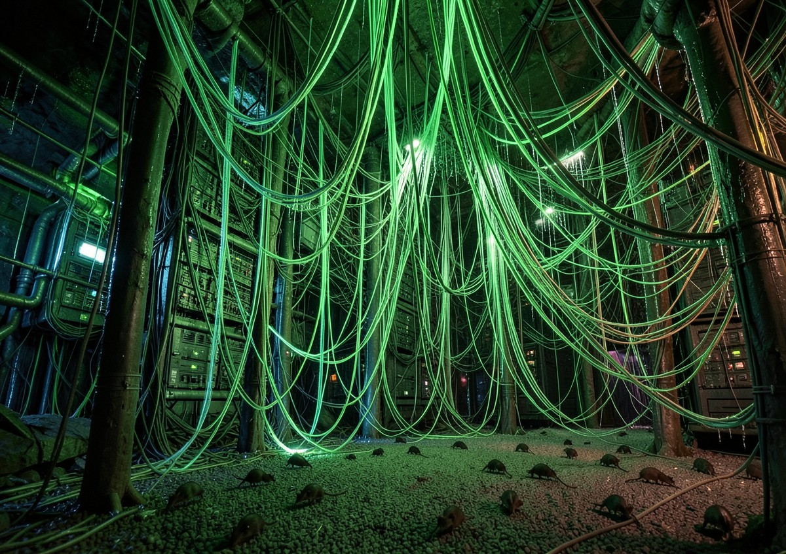

THE GREATER DARK
BEYOND THE BLOOD — cross-shroud index of everything the clans pretend not to believe in

The Greater Dark is everything that is not Kindred and is still hungry. Mages who rewrite what is possible. Fallen things wearing mortal jobs. The dead who did not finish dying. The dreaming things behind the walls. Hunters with ledgers and no sense of humor. This index consolidates registry attributions across six desks. Factions below are canon at the desks that filed them; identities are attributions, not gospel. VERIFY BEFORE TRUSTING — cross-shroud material ages like blood in a glass. For clan-level Kindred intel, see DOSSIERS and THE KINDRED INDEX. For what the mages call consensus, see CLAN — the Curse is the one law we can verify locally.
SEVENTEEN NAMES THE DESKS WANT ALIVE — OR AT LEAST ACCOUNTED FOR